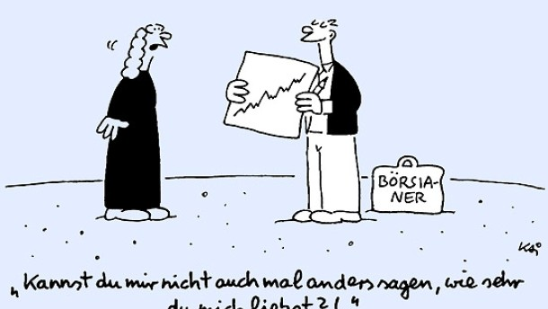

Finanzmarkt - Definition, Erklärung & Tipps Die Interessen der Verbraucher und der Realwirtschaft müssen Wegweiser für weitere Reformen des Finanzmarkts sein. Regulierung und Aufsicht sind so zu gestalten, dass Risiken minimiert und Krisensignale rechtzeitig erkannt werden. Ein Finanzmarktwächter muss sicherstellen, dass neue Entwicklungen und ihre Folgen für Verbraucher systematisch ausgewertet, Missstände erkannt und diesen ...
Finanzmarkt - BMF Der Begriff Finanzmarkt fasst alle Märkte zusammen, auf denen sich Angebot und Nachfrage nach Finanzmitteln gegenüberstehen. Auf Finanzmärkten wird mit Geld (kurzfristige Mittelbeschaffung), Kapital (langfristige Mittelbeschaffung) oder Währungen gehandelt. Der Finanzmarkt leitet Finanzmittel von Kapitalgebenden zu Kapitalnehmenden: Kapitalgebende ...
Finanzmarkt hat in der Klimapolitik noch Luft nach oben ... Manipulationen der Bilanzen von Kapitalmarktunternehmen erschüttern das Vertrauen in den deutschen Finanzmarkt und fügen ihm schweren Schaden zu. Jüngste Vorkommnisse haben gezeigt, dass insbesondere die Bilanzkontrolle gestärkt und die Abschlussprüfung weiter reguliert werden müssen, um die Richtigkeit der Rechnungslegungsunterlagen von ...
Finanzmarkt – Wiktionary Finanzmarkt: Bessere Kundenberatung in Sachen Nachhaltigkeit Bei der Beratung ihrer Kunden sollen Wertpapierfirmen und Versicherungsvertreiber künftig Nachhaltigkeitsfragen besser berücksichtigen. Wie in ihrem Aktionsplan für ein nachhaltiges Finanzwesen vom Mai 2018 angekündigt, hat die Europäische Kommission heute (Freitag) entsprechende ...
Finanzmarkt – Schreibung, Definition, Bedeutung, Beispiele ... Finanzmarkt Das Bundesministerium für Finanzen hat die Aufgabe, die gesetzlichen Rahmenbedingungen so zu gestalten, dass die Finanzmärkte ihre volkswirtschaftliche Funktion erfüllen können. Dabei geht es zum einen um den effizienten Zugang zu den Finanzmitteln (Kredite, Wertpapiere, Sonderfinanzierungen), um Unternehmen die Finanzierung ...
Finanzmarkt: Bessere Kundenberatung in Sachen ... Erstmals hat sich der gesamte Schweizer Finanzmarkt auf Klimaverträglichkeit testen lassen. Die Resultate zeigen erste Fortschritte, verfehlten aber noch das Ziel, wenn der Finanzplatz eine führende Rolle im Bereich nachhaltiger Finanzflüsse...
Finanzmarkt Definition und Erklärung im boerse.de Lexikon Finanzmarkt - boerse.de-Wirtschaftslexikon: Der Finanzmarkt beinhaltet alle Märkte im Finanzsystem, über die sich eine Organisation - sei es eine staatliche Behörde oder eine...
Finanzmarkt - FAZ Finanzmarkt – Schreibung, Definition, Bedeutung, Beispiele im DWDS Um den vollen Funktionsumfang dieser Webseite nutzen zu können, muss JavaScript aktiviert sein. Hier finden Sie Hinweise, wie Sie JavaScript in Ihrem Browser aktivieren können.
BMJV | Aktuelle Gesetzgebungsverfahren | Gesetz zur ... Der Finanzmarkt ist die Gesamtheit aller Märkte, auf denen sich sowohl das Angebot als auch die Nachfrage nach Finanzmitteln gegenüberstehen. Bei den Finanzmitteln kann es sich beispielsweise um Währungen, Wertpapiere oder Rohstoffe handeln. Der Finanzmarkt wird in den Geldmarkt, den Kapitalmarkt, den Devisenmarkt und den Kreditmarkt unterteilt.
Finanzmarkt - Wirtschaftslexikon
2020.12.08 18:03

Empfehlungen A B C D E F G H I J K L M N O P Q R S T U V W X Y Z Home Top 10 Fachbereiche News Hilfe & FAQ HOME / WIRTSCHAFTSLEXIKON / Finanzmarkt
Finanzmarkt
Der Finanzmarkt ist die Gesamtheit der Märkte, auf denen sich Angebot an und Nachfrage nach Finanzmittel n gegenüberstehen. Er kann nach der Fristigkeit der Mittelüberlassung in einen Geldmarkt (kurzfristige Mittelbeschaffung) und in einen Kapitalmarkt (langfristige Mittelbeschaffung) unterschieden werden.
Die Gesamtheit der Märkte, auf denen sich Angebot an und Nachfrage nach Finanzmittel n gegenüberstehen. Eine Gliederung in Teilmärkte kann in unterschiedlicher Weise vorgenommen werden. Die gebräuchlichste ist die an der Fristigkeit der Mittelüberlassung orientierte in » Geldmarkt und Kapitalmarkt , wobei bei einer engen Fassung dieser Begriffe weitere Märkte hinzutreten z. B. der Markt für Bankkredite und für Schuldscheindarlehen . Ein anderes Gliederungsschema differenziert zwischen Eigenkapitalmärkten z. B. Märkte für » Aktien und GmbH Anteile und Fremdkapitalmärkten z. B. Märkte für Schuldverschreibungen und andere Kredite . Gelegentlich wird der organisierte Finanzmarkt z. B. Börsen, Märkte, an denen Banken und andere Kapitalsammelstellen als Akteure auftreten vom nicht organisierten Finanzmarkt z. B. Märkte für Privatdarlehen abgegrenzt. Daneben unterscheidet man zwischen nationalen und inter nationalen (z. B. Eurodollarmarkt ) Finanzmärkte n. Da alle Finanzmärk te der Anlage bzw. Beschaffung fi nanzieller Mittel dienen, bestehen en ge Zusammenhänge zwischen den verschiedenen Teilmärkten, die sich in einer weitgehend parallelen Zins und Kursentwicklung niederschla.
Das (gedankliche) Zusammentreffen der Märkte, auf denen Geld, Kapital , Kredit, Wertpapiere , Devisen usw. angebot en und nachgefragt werden. In allen modernen Volkswirtschaft en werden Ersparnisse und Investitionen über die Finanzmärkte weitergeleitet. Daher kann die institutionelle Struktur der Finanzmärkte wichtiger Faktor für den natürlichen Realzins sein. Effiziente Finanzmärkte tragen erheblich zur optimalen Allokation der Ersparnisse über die Zeit und über Investitionsprojekt e bei. Eine verbesserte Struktur der Finanzmärkte kann z.B. die Palette an Anlageformen, die Sparern i. Hinbl. a. Rendite , Risiko und Liquidität zur Verfügung stehen, vergrössern. Dies wiederum kann insgesamt zur Folge haben, dass private Haushalte mehr sparen und damit der gleichgewichtige Realzins sinkt.
Kreditmarkt
Markttypologie
, Kreditmarkt . Sammel-Begr. aller Teilmärkte des Angebot s und der Nachfrage von Kredite n. Der F. wird nach der Fristigkeit der monetär en Transaktion en in den Geldmarkt und den Kapitalmarkt unterteilt. Nach räumlichen Gesichtspunkten wird zwischen dem inländischen (nationalen) F., dem ausländischem F. sowie dem sich über Staatsgrenzen hinweg erstreckenden internationalen F. (vgl. Euro-Markt ) unterschieden. Hinsichtlich des Erfüllungszeitpunktes von Finanzierungsgeschäften wird nach Kassamarkt und Terminmarkt differenziert. Letzterer kann nach der Art des Termingeschäfte s weiter aufgegliedert werden in Optionsmarkt und Märkte für unbedingte Termingeschäfte , diese wiederum in den Forward-Markt und Future-Markt .
(engl. financial markets) Nach der Fristigkeit des Finanzgeschäfts wird der Finanzmarkt in 4 Geld und 4 Kapitalmarkt unterteilt. Die kurzfristige Geldanlage und ufnahme wird unter den Begriff Geldmarkt gefasst. Der Geldmarkt i. e. S. (oder Bankenmarkt) zerfällt in einen .+Markt für Geldmarktpapiere ( unverzinsliche Schatzanweisungen , Schatzwechsel , Wechsel ) und in einen Markt für Zentralbankguthaben ( Interbankenmarkt ), auf dem Banken untereinander entweder mit Tagesgeld (24 Stunden Fristigkeit ) oder mit Termingeld (1 12 Monate Fristigkeit ) handeln. Beim Unternehmensgeldmarkt wird zwischen. Industrieclearing (Handel von Tages und Termingeld zwischen Großunternehmen mit erstklassiger Bonität ) und Konzernclearing (Ausgleich von Liquiditätsüberschüssen und defizit en innerhalb eines Konzern s) unterschieden. Der Markt für längerfristige Kapitalanlagen wird als Kapitalmarkt bezeichnet, wobei dieser Markt in den Kassamarkt (Vertragserfüllung muss in Deutschland spätestens nach zwei Börsentagen erfolgen; ~ Kassageschäft ) und den Terminmarkt ( Termingeschäft ) segmentiert wird. Eine andere Unterteilung des Kapitalmarkt es wird zwischen dem Primärmarkt , auf dem nur der Handel mit Neuemission en von Wertpapiere n durchgeführt wird, und dem Sekundärmarkt , auf dem sich der Handel mit bereits emittierten Papieren zwischen den Anlegern vollzieht, vorgenommen. Zu den Finanzmärkte n zählen auch der Kreditmarkt und die Devisenmärkte, auf denen per Kasse oder per Termin auf Währung en lautende 4 Forderungen gehandelt werden. In den letzten Jahren hat sich abgeleitet aus dem Grundprodukt der traditionellen Finanzmärkte ein außerordentlich dynamisch wachsender Handel in derivativen Produkte n ( Derivate ) entwickelt ( Finanzinnovation ).
Diesen Artikel der Redaktion als fehlerhaft melden & zur Bearbeitung vormerken
Schreiben Sie sich in unseren kostenlosen Newsletter ein
Bleiben Sie auf dem Laufenden über Neuigkeiten und Aktualisierungen bei unserem Wirtschaftslexikon, indem Sie unseren monatlichen Newsletter empfangen. Garantiert keine Werbung. Jederzeit mit einem Klick abbestellbar.
Weitere Begriffe : Aktivierung, steuerrechtliche | Geringfügige Dienstverhinderung | Schlange im Tunnel
Praxisnahe Definitionen
Nutzen Sie die jeweilige Begriffserklärung bei Ihrer täglichen Arbeit. Jede Definition ist wesentlich umfangreicher angelegt als in einem gewöhnlichen Glossar.
Marketing
Definition
Konditionenpolitik
Fachbegriffe der Volkswirtschaft
Die Volkswirtschaftslehre stellt einen Grossteil der Fachtermini vor, die Sie in diesem Lexikon finden werden. Viele Begriffe aus der Finanzwelt stehen im Schnittbereich von Betriebswirtschafts- und Volkswirtschaftslehre.
Investitionsrechnungen
Marktversagen
Umsatzsteuer
Beliebte Artikel
Bestimmte Erklärungen und Begriffsdefinitionen erfreuen sich bei unseren Lesern ganz besonderer Beliebtheit. Diese werden mehrmals pro Jahr aktualisiert.